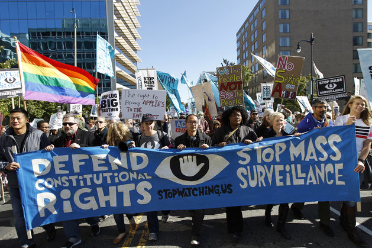

From the invention of the printing press to the birth of the Internet, Americans have exercised their right to free speech and press through several mediums. At the heart of it is the need for the press to keep people informed and the citizens’ need to dissent. As technology has progressed, the institutions who wish to stop those freedoms have attempted different tactics to circumvent our First Amendment rights. These methods are designed to change how society perceives the world, and to silence and oppress us. It is becoming increasingly difficult to reveal corruption and tyranny in the United States. Using the Internet, the US government and corporations have turned our First Amendment rights into a charade by which American people still believe they are being informed. They have blinded us to the manipulation of our media, which has become incapable of shining a light on the true politics behind America today.
The establishment views the Internet as a weapon which empowers people to exercise their right to protest, speak their mind, and circumvent oppression. In totalitarian regimes throughout history, one of the first methods to make sure the citizens did not overpower the government was to control the people through censorship and data collection. This was the case of the Stasi and the KGB, as well as the Soviet Union, and even goes as far back as The Roman Empire. It’s similarly the case with America. The NSA, in order to put a leash on the Internet has been collecting information on citizens and storing it in massive databases as a way of limiting them from utilizing free speech in the modern world. While John Gilmore said, “The Net interprets censorship as damage and routes around it”(qtd. In Bennett 22) he was actually referring to Usenet, a much older and smaller subset of the Internet we use today. He is right in that it is a difficult task to censor the Internet, but we shouldn’t pretend that the dangers of letting the NSA run amuck do not exist. “National security policies place the US and other mature democracies in the same discussion with countries, like Russia, that see the Internet as both a threat and a means of control”(Bennett 27). Corporations such as Google, Apple, Facebook, and several others feed the system by supplying information to the NSA and helping them in their efforts to curb the freedom of speech. Instead of putting a block on the flow of information as Gilmore describes, they instead use the continual flow of information as a tool to systematically aid their oppression of American citizens. When Snowden revealed the extent of the NSA‘s surveillance programs, it changed the way Americans saw the technology. A smart phone became a tracking device. A laptop’s webcam became a hidden camera into our lives. American citizens began to consider censoring themselves and to cease utilizing their rights. Some avoided typing searches into Google or Yahoo!, fearing those companies could be peering into the results and handing that information over to the NSA without permission or a warrant. Snowden had proven to us that we were living in a state of panoptic surveillance. As Andrews puts it, “…every action I’ve taken has been surreptitiously chronicled and analyzed by data aggregators, who then sell the information to companies…not only have I not been informed about this invasion of my privacy and security, there’s almost nothing I can do about it”(708). Andrews is right and security is swiftly becoming the primary facet in the struggle to keep free speech. Many journalists and protest movements are starting to use encryption to defend their voice and even their lives. According to Jacob Appelbaum at the World Forum for Democracy, “Our security situation today is not a matter of security vs privacy. Our security requires strong privacy, and our security requires autonomy, it requires transparency and accountability, it requires free speech, it requires fundamental human rights to be respected”(Appelbaum). Without a clear understanding that our speech on the Internet needs to be protected and secure, we are at the whim of any institution wanting to peer into our virtual lives. The government knows this and so it attacks people who are found using strong anonymity software, such as the Tor Browser(Ball). “…In the information age cryptography is about political power, and in particular, about the power relationship between a government and its people. It is about the right to privacy, freedom of speech, freedom of political association, freedom of press, freedom from unreasonable search and seizure, freedom to be left alone”(Zimmerman qtd. in Singh 296).
While the freedom of speech and the security to protect it is being circumvented, public dissent is also being attacked. Being pepper-sprayed and forced out of protesting by riot police has made Occupy Wall Street a household name when people discuss subjugation at the hands of the establishment. In Ferguson, reporters were teargassed, removed from the area, and unable to ask questions of the police. This proved the media’s rights are no longer respected(Mirkinson). Protesters are being confined into tight squares called “free speech zones” where the protests are hidden from public eye behind barricades or barbed wire. These zones are common on college campuses where students’ right to challenge the colleges is stifled in order to keep from rocking the boat. All of these cases are offensive detriments to our Constitution. By combating American’s right to question, the establishment is sending a chilling effect across our nation.
Just as there are multiple attacks against free speech, the freedom of press is in its own war with authority. Publications on the Internet are manipulated and censored through funding and government control. Bennett lists techniques that demonstrate this, “Filtering, blocking and hacking replaced scissors and black ink. Some governments barred access to Web pages they didn’t like, redirected users to sites that looked independent but which in fact they controlled, and influenced the conversation in chat rooms and discussion groups via the participation of trained functionaries.”(24). It is because of these reasons and many others that journalists are quickly finding themselves in an insecure position, unable to write stories without authorities telling them to pull the story. Freelance journalists are even under threat of being fired or losing their paychecks if they test the waters. The authorities are making business deals with the intent of subjugating press sources and controlling the flow of information. This problem is so entrenched within the system that not only are journalists prevented from doing their jobs properly but even whistleblowers are finding it tricky to leak to the press, when the press is a faction of the entity in question. With the rise of social news sources such as Twitter and Facebook, as well as “Reality TV” style broadcasts, news organizations have lowered the standard for their reporting to appeal to a broader demographic. By avoiding relevant issues in order to prioritize their sales and maintain the status quo, the media is censoring itself and refusing to offer narratives which don’t attract enough of a crowd. Without a valuable means of gaining knowledge about the affairs of both our country and the world, it is almost impossible for us to know what to speak out against. “Here, the restrictions are based on what publishers are willing to print and what advertisers are willing to support. In this way, publishers are the invisible censors of the Western world”(Thom 31). News sources who are not part of this scheme are pushed aside to make way for more profitable topics, such as Donald Trump’s presidential campaign or how much the Republicans dislike ‘Obamacare.’ Its as Gary Pruitt says, “Nonofficial news sources are critical to a free press and critical to holding a government accountable. Otherwise you are just going to hear from the official sources and then the public will only know what the government wants them to know”(qtd. in Foxhall 43). Even if someone thinks they can avoid this by just switching to the Internet for their news, the problem has extended itself to that medium as well. “With the physical version of The New York Times, you’d at least see the headlines about what was going on in the world, even if you were skimming the paper to get to the movie reviews. But world news may disappear entirely from your browser if you have indicated an interest in something else”(Andrews, 712). Corporate ‘weblining’ is just another systemic method of oppressing the American public, as it deters them away from the opportunity of seeing fresh content.
In order to fight these limitations, we need to advocate for security, privacy, and put forth a strong message in favor of transparency and justice. Americans must also voice disagreement with police brutality and practice dissent wherever they choose, not just in special zones designed to keep them from speaking out. Thanks to powerful encryption tools and anonymity networks, activists, reporters and whistleblowers are making the switch to more secure methods of communication and are able to talk to one another without the fear of persecution or censorship. Non-profit organizations such as the Electronic Frontier Foundation and the Freedom of the Press Foundation, are helping advocate for an open and transparent government which protects speech on the Internet. “Pressures on governments for transparency, accountability, access to public information, and more citizen participation in public decisions will not go away”(Bennet 28). Both as a citizenry and as individuals, we must remain vigilant in holding those who would try to remove our rights accountable for their actions. When the government is found to be spying on the populace or news outlets are proven to be hiding stories from the public, we cannot allow them to get a free pass. That will only foster an ignorant society and allow for more unwarranted oppression. Instead, we must use the freedom of speech and the freedom of press to stand up to the oppressors and show them the power still belongs with the people.
Appelbaum, Jacob. “We need more, not less democracy.” OpenDemocracy.net. Nov. 20th, 2015. Web. 3 Mar. 2016.
Andrews, Lori. “George Orwell…Meet Mark Zuckerberg.” Rereading America: Cultural Contexts for Critical Thinking and Writing. Ed. Colombo, Gary, Robert Cullen and Bonnie Lisle. 9th ed. Boston: Bedford/St. Martin’s, 2013. 707-719. Print.
Ball, James, Schneier, Bruce, and Glenn Greenwald. “NSA and GCHQ target Tor network that protects anonymity of web users.” The Guardian. Oct. 4 2013. Web. 3 Mar. 2016.
Bennet, Philip, and Moises Naim. “21st-Century Censorship.” Columbia Journalism Review. 53.5 (2015): 22-28. Business Source Complete. Web. 3 Mar. 2016.
Foxhall, Kathryn. “When Censorship Becomes A Cultural Norm.” Editor and Publisher. 147.5 (2014): 40-45. Academic Search Complete. Web. 3 Mar. 2016.
Mirkinson, Jack. “Why What Happened To Reporters In Ferguson Matters So Much.” Huffington Post. Aug. 17, 2014. Web. 3 Mar. 2016.
Singh, Simon. The Code Book. New York: Anchor Books, 1999. Print.
Thom, Cathleen. “Invisible Censorship: The Freedom of Press And Its Responsibility.” Humanist 59.4 (1999): 31-32. Readers’ Guide Full Text Meda (H.W. Wilson). Web. 3. Mar. 2016